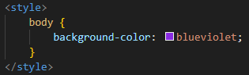

CSS
Bueno, ya tenemos una página web de mediados de los 90's, pero si lo que quieres es algo más moderno es necesario hablar de CSS, el "lenguaje" utilizado para estilizar las web. Por medio de CSS podemos personalizar el tipo, el color y el tamaño de las letras, el fondo de la sección o de la página, animaciones, posicionamiento y muchas cosas más.
Para insertar CSS podemos utilizar cualquiera de las siguientes opciones:
-
En línea: En esta opción escribimos el código dentro de la etiqueta HTML que se quiera editar. Esta opción se recomienda para pequeñas ediciones muy específicas, ya que si se escribe toda la personalización no va a verse bien y va a dificultar su lectura y/o entendimiento.
Para utilizar esta forma de CSS debemos escribir style:"" dentro de la etiqueta, colocando entre las comillas la configuración deseada. -
Interno: Personalmente es la que menos me gusta, y prácticamente no la utilizo nunca. En esta opción crearemos una estiqueta style dentro del head de la página, y en medio de estas se coloca el código CSS.
Para escribir CSS, colocamos la etiqueta, la clase o el id (más adelante veremos esto), abrimos corchetes y en medio colocamos lo que se quiere personalizar, finalmente cerramos corchetes.
Otro de los inconvenientes que le encuentro a esta forma de escribir el CSS es que en cada página que creemos tendremos que copiar y pegar el código, y si se realiza algún cambio en uno de los HTML, pueden quedar diferentes las páginas.  -
Externo: Creo que esta es la forma más utilizada, es fácil de personalizar y permite uniformidad en la personalización de todas las páginas HTML que hagamos, para utilizarlo debemos crear un nuevo archivo en nuestro Visual Studio Code el cual generalmente se llama style.css. Realmente uno puede colocar el nombre que prefiera, lo importante es que termine en .css, pero style.css es un nombre utilizado en todos lados, por lo que en caso que otro programador deba entrar a revisar nuestro código, será más facil encontrarlo si tiene este nombre.

Después de crear nuestro archivo css es necesario enlazarlo al HTML y esto se realiza escribiendo en el head el siguiente código:
En el caso del ejemplo el archivo se llama styles.css, pero si creas un archivo con un nombre diferente es necesario escribir el nombre tal cual sea el del archivo. Una vez hecho el vínculo, vamos al archivo del CSS, donde escribimos el código de la misma forma que en la opción interna.
Los invito que jueguen con el css, busquen en internet que caracteristicas se pueden cambiar, ojalá tengan mejor gusto que yo al elegir los colores y las tipografías.
Para el ejemplo el código que utilicé es este:
Como consejo, es una buena práctica comentar nuestro código en caso que alguien más lo deba revisar, estos comentarios no afectan el código, por lo que no se veran en la página web (si los escribimos bien). Al momento de vincular el CSS en el head podemos comentar que lo que viene a continuación es el vínculo CSS.
En caso de HTML, para hacer un comentario debemos escribir lo siguiente todo junto "< ! -- después escribimos el comentario que queremos dejar y cerramos con - - >".